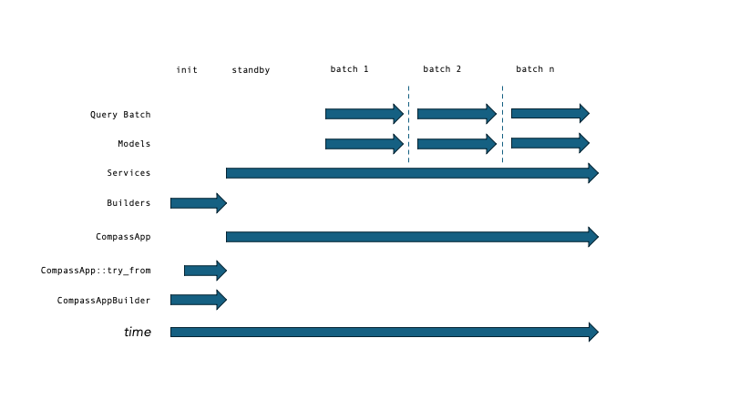

Rust Code Style#
Overview#
RouteE Compass predominantly written in the Rust programming language. Rust is a systems programming language that avoids common pitfalls of predecessors such as C and C++ related to memory safety and cybersecurity. It employs many modern features of programming languages which allow developers to write succinctly and expressively, leading to rapid feature implementations. It has recently been identified by government programs as a best-in-class language for building new systems.
It is recommended that Compass developers complete the Rustings course from the below resources list and then review the following patterns and conventions for writing in Rust.
Resources for Learning Rust#
The Rustlings course
The Rust Book
Let's Get Rusty @ YouTube
General Code Style#
References vs Values#
When writing functions, 99% of the time, use a reference ("&") to an object instead of taking it directly. In other words:
// requires ownership of value to execute the function
// which should only be the case if the call site should expect it
// no longer has control of it (<1% of the time)
fn probably_bad(value: MyType)
// only requires borrowing the value, ensuring we are not modifying it
fn probably_good(value: &MyType)
// of course there are other conditions, like, if we want to modify the
// value by reference, but this still means we are using &.
fn could_be_fine(value: &mut MyType)
Testing & Comments#
You've written something non-trivial? Great! Write some tests in the bottom of the file that test it.
#[cfg(test)]
mod test {
#[test]
fn test_the_universe() {
assert_ne!(1 + 1, 3, "phew, the universe still works");
}
}
Also please write some comments! Docstring comments at the top of the function are converted into our user documentation. Rustdoc is, for the most part, simple markdown, described in The Rust Doc Book. Here is an example in the Compass library.
Inline comments can be helpful, but usually only need to be a sentence, to explain something that may be difficult to understand when skimming the code.
fn my_function() {
// search for the meaning of life and only proceed if it exists
let result: Option<i64> = (0..50).into_iter().find(|v| *v == 42);
match result {
Some(meaning_of_life) => println!("found it! it's {}", meaning_of_life),
None => println!("bummer, didn't find it"),
};
}
Error handling#
Avoid Unhandled errors#
Code will not be accepted that contains .unwrap(), panic!() or .expect() except for in approved edge cases which must be explained with comments.
For reference, consider this question/answer pair from stack overflow.
Instead of these, Compass makes heavy use of Option and Result types in function signatures.
This way, a halting program can provide a more meaningful explanation of the cause of failure.
Error libraries#
Compass contains a variety of error types and relies heavily on the thiserror crate. Do not use anyhow in the Compass library except in the case of writing simple command-line scripting.
Return Type Conventions#
When writing Compass code, deciding whether to use Option or Result can greatly simplify the control flow and readability of your code.
Consider this rule-of-thumb when deciding what your function returns. For some function fn my_function(value: I) -> O,
if every value of
Ihas some correspondingO, then you don't needOptionorResultif the function from
ItoOis piecewise, the return signature should beOption<O>which basically says "some values ofIhave no corresponding value ofObut that's not an error"if some values of
Ican cause the program to fail, return aResult<O, SomeError>if some values of
Ican cause the program to fail and the function is piecewise, return aResult<Option<O>, SomeError>
If your return type is a Result, you should spend a moment thinking about the corresponding type of SomeError.
If the code can be called by many different components, then it should probably be moved to a util module, and the return type should be general.
In most cases, this means SomeError = String.
If the code is used exclusively by some existing component of the Compass system, the error type should match.
For example, code used exclusively by a TraversalModel should return a TraversalModelError.
This allows the call site to leverage the ? operator, making business logic more succinct.
Choosing Your Abstraction#
It is time for you to write some code for Compass. Hooray! Depending on the scope of your work, here are some examples of how you may take a least-power approach to selecting an abstraction for your contribution. In typical cases, the power of your abstraction steps through the following hierarchy:
a helper function
a module
a newtype struct
a struct
an enum
A Simple Code Tweak#
If your code is a tweak to existing rows, you may not require an abstraction to complete it. This is the base case.
A Helper Function#
If your new functionality spans enough lines that the code becomes less readable, then you should move it into a new function body. This is abstraction level 0. There are a few concerns here, namely, where it goes, use of references in the signature, testing + comments.
Where to Add Your Function#
While you may begin adding it to the same file you are modifying, it may become obvious quickly that it has different scope than the call site. Consider these possibilities:
it is a small helper function: it can go below all of the functions, structs, and enums in this file
it bloats the file but belongs with the file's code: perhaps make a sibling file with the
_ops.rssuffix for this functionit has broad utility: find a home in the
crate::utilmodule of the crate, or, in theroutee_compass_core::utilcrate if it has broad applicability
If your helper function stops being small, consider stepping up the hierarchy to writing a Module
Modules#
A module in Rust is a Rust file, that's it, it's a simple way to organize code. If you are doing something more complex than adding inline changes or a helper function, then you likely need to add a new module (file). Depending on whether your file contains functions only or includes other definitions, we apply different export policies, as described below.
mod.rs#
The following example shows how different module types should be linked via the mod.rs files in the codebase. In this example, we have the following setup:
outer/
mod.rs
inner/
mod.rs
my_ops.rs
my_object.rs
When creating a new directory, insert a mod.rs file and link it to the mod.rs file with a public import:
// outer/mod.rs
pub mod inner;
If we are adding a file with only operations in it, export it's module publicly. If we have structs/enums/traits, export the module privately but export the structs/enums/traits publicly.
// outer/inner/mod.rs
pub mod my_ops;
mod my_object;
pub use my_object::MyObject;
// outer/inner/my_ops.rs
fn do_work() -> () { todo!() }
// outer/inner/my_object.rs
pub struct MyObject {}
Newtype Structs#
A newtype struct is a zero-cost abstraction that adds some compile time safety around use of some underlying built-in datatype, as well as providing object methods. Use a newtype struct if you are adding new data that is low-level and has some rules around how it behaves. This is not common unless you are creating a new component in the system, and is only truly meaningful if there are a large number of instances of the data type expected.
InternalFloat#
Floating point numbers in Rust cannot be compared for equality or ordering.
The routee_compass_core::model::unit::InternalFloat class wraps f64 types with comparison operators.
Structs#
A struct is a record type in Rust (a product type). If your function builds something complex, we likely want the result of the function to produce a struct. This adds a few improvements:
named fields for readability
constructor methods
Example: Refactoring A Complex Function Return Type Into A Struct#
use std::collections::HashMap;
use itertools::Itertools;
// original function
fn new_thing(data: HashMap<String, f64>, default: &str) -> (Option<f64>, f64, Vec<String>) {
let default: Option<f64> = data.get(default);
let sum: f64 = 0.0;
let names: Vec<String> = Vec::with_capacity(data.len());
for (k, v) in data.into_iter() {
sum += k;
names.push(v);
}
(default, sum, names)
}
let data1: HashMap<String, f64> = HashMap::new();
let (default, sum, names) = new_thing(data1, "food");
// as a struct
struct Thing {
default: Option<f64>,
sum: f64,
names: Vec<String>
}
impl Thing {
pub fn new(data: HashMap<String, f64>, default: &str) -> Thing {
let default: Option<f64> = data.get(default);
let sum: f64 = 0.0;
let names: Vec<String> = Vec::with_capacity(data.len());
for (k, v) in data.into_iter() {
sum += k;
names.push(v);
}
Thing { default, sum, names }
}
}
let data2: HashMap<String, f64> = HashMap::new();
let thing = Thing::new(data2, "food");
Enums#
Enums give a common API to different records (a sum type). If you are finding that your code has distinct (read: discrete) behavior based on an argument, it may be cleaner to represent as an enum.
Example: Refactoring A Struct With Two States as an enum#
use std::collections::HashMap;
use itertools::Itertools;
// original struct
struct Thing {
pub has_default: bool,
pub default: f64,
sum: f64,
names: Vec<String>
}
impl Thing {
pub fn new(data: HashMap<String, f64>, default: &str) -> Thing {
let default_opt: Option<f64> = data.get(default);
let has_default = default_opt.is_some();
let default = default_opt.unwrap_or_default();
let sum: f64 = 0.0;
let names: Vec<String> = Vec::with_capacity(data.len());
for (k, v) in data.into_iter() {
sum += k;
names.push(v);
}
Thing { has_default, default, sum, names }
}
}
let data1: HashMap<String, f64> = HashMap::new();
let thing = Thing::new(data1, "food");
let default = match thing.has_default {
true => Some(thing.default),
false => None
};
// revised as an enum
pub enum ThingEnum {
NoDefault {
sum: f64,
names: Vec<String>
},
HasDefault {
default: f64,
sum: f64,
names: Vec<String>
}
}
impl ThingEnum {
pub fn new(data: HashMap<String, f64>, default: &str) -> Thing {
let sum: f64 = 0.0;
let names: Vec<String> = Vec::with_capacity(data.len());
for (k, v) in data.into_iter() {
sum += k;
names.push(v);
}
match data.get(default) {
Some(default) => ThingEnum::WithDefault { default, sum, names },
None => ThingEnum::NoDefault { sum, names }
}
}
}
let data2: HashMap<String, f64> = HashMap::new();
let thing_enum = ThingEnum::new(data2, "food");
let default = match thing_enum {
ThingEnum::HasDefault { default, sum, names } => Some(default),
ThingEnum::NoDefault { sum, names } => None,
};
Collections#
Prefer Box<[T]> (boxed slices) over Vec<T> for large collections#
In RouteE Compass, high performance comes from the vectorization of graph data due to data locality.
While a
Vec<T>is a common way to represent contiguous data, it lacks the ability to match capacity exactly with length unless it is set beforehand. In many cases, it is not possible to know the full size of millions of rows of data before loading without adding additional computational burden. As a result, data loaded intoVecs will be subject to the built-in standard library memory partitioning algorithm. The memory allocation will duplicate (2x) each time it reaches capacity, and, in the worst case, this will lead to a memory allocation that is 2x the size of the resulting collection. This is a big problem when collection sizes are very large.
Alternatively, Rust provides Box<[T]>, which When dealing with large persistent datasets such as Graph and TraversalModel data, we want to store that data in a Box<[T]>.
When constructing the dataset, the Vec can be used, and then converted to a Box<[T]> afterward via into_boxed_slice:
use std::path::Path;
use routee_compass_core::util::fs::read_utils;
let path: Path = Path::from("somewhere/in/the/filesystem/my.csv");
let data: Vec<T> = read_utils::from_csv(&file_path, true, None, None)?;
let output: Box<[T]> = data.into_boxed_slice();
Vec is preferred for smaller or non-persistent datasets, or when the additional features of Vec are used, such as iteration or dynamic allocation.
Trait Objects Modeling System State: The Builder, Service, Model Convention in RouteE Compass#
In RouteE Compass, large Traversal and Frontier objects are loaded once and shared across threads. These are built in two phases: once at application initialization, and once again for each query, so that query-specific parameters can be applied.

These phases are represented concretely as trait objects. The following table illustrates this relationship for the Frontier and Traversal models in Compass:
phase |
description |
lifetime |
Frontier |
Traversal |
|---|---|---|---|---|
builder |
an empty struct with a |
app initialization only |
|
|
service |
struct with a |
entire program lifetime (same as CompassApp instance) |
|
|
model |
object used by the search algorithm |
duration of a single query |
|
|
when we apply the build methods, we get these results (using the travel time TraversalModel as an example):
use serde_json::{Value, json};
use std::rc::Rc;
use std::sync::Arc;
use routee_compass_core::model::{
frontier::{FrontierModelBuilder, FrontierModelService, FrontierModel},
};
use routee_compass::model::frontier_model::default::road_class::RoadClassBuilder;
// RouteE Compass passes in the "[traversal]" section of the application configuration
// here so that it can be used by the selected builder to configure a service.
let config: Value = json!();
// a single user search query, which may provide additional configuration. in this case, the query
// restricts road classes to those that are walk-able OpenStreetMap highway tags.
let query: Value = json!({
"road_class": ["sidewalk", "living_street", "service", "steps", "track", "path", "trailhead", "pedestrian"]
});
let builder: Rc<dyn FrontierModelBuilder> = Box::new(RoadClassBuilder {});
let service: Arc<dyn FrontierModelService> = builder.build(&config)?;
let model: Arc<dyn FrontierModel> = service.build(&query);
Trait objects are built on the heap.
Working with an instance of a trait object requires dynamic dispatch and so these are referenced from a smart pointer.
The builder object instances are wrapped in an Rc and used when creating CompassApp instances.
Once we build a service from the builder, the app requires that they are wrapped in an Arc, which is a thread-safe pointer.
This way, the service can be shared across threads so we can build a model for a specific user query from within a query thread.